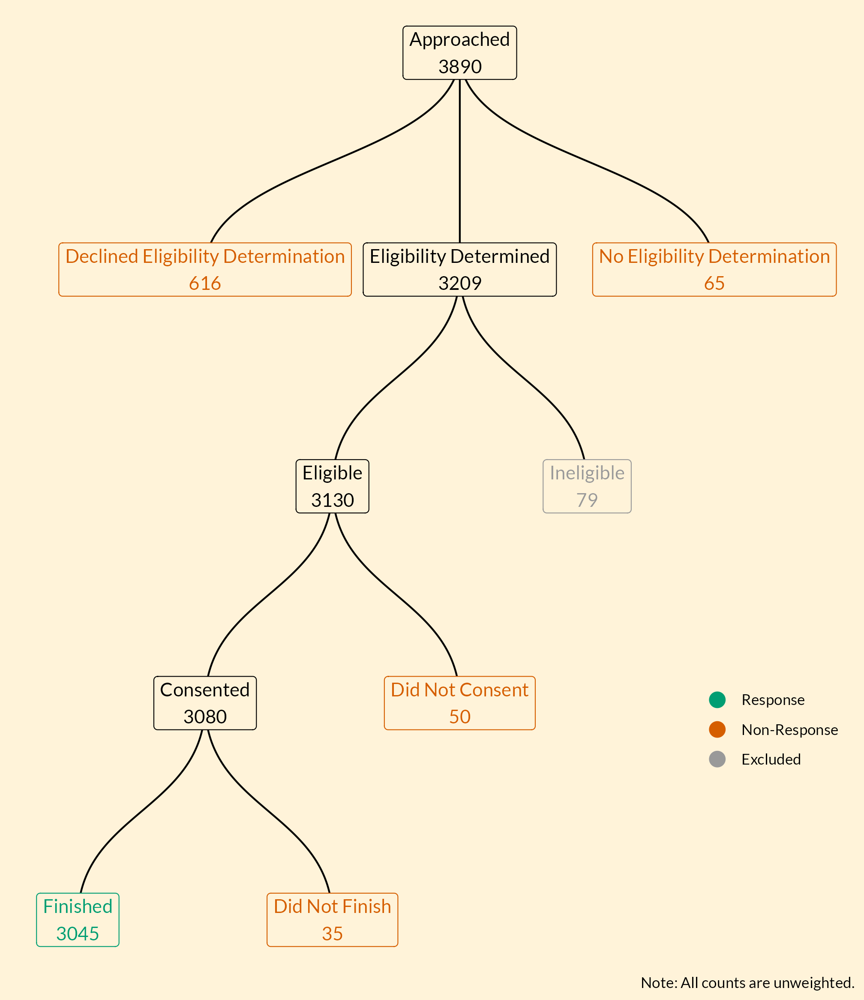
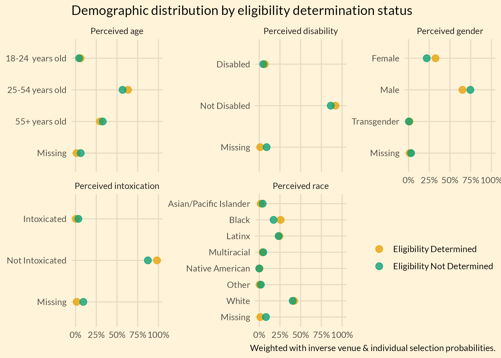
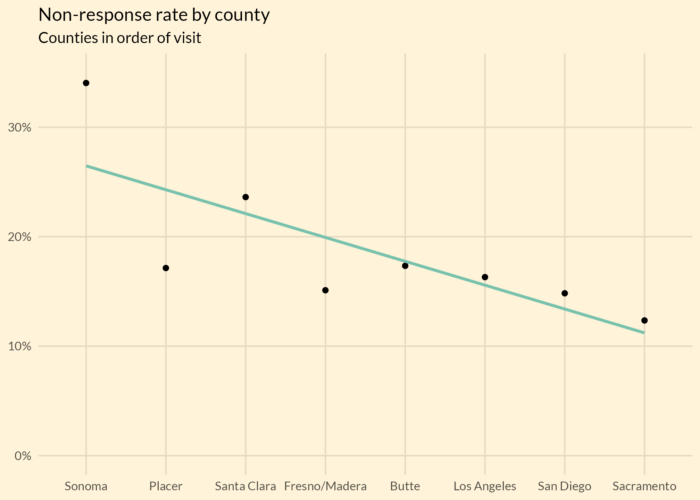
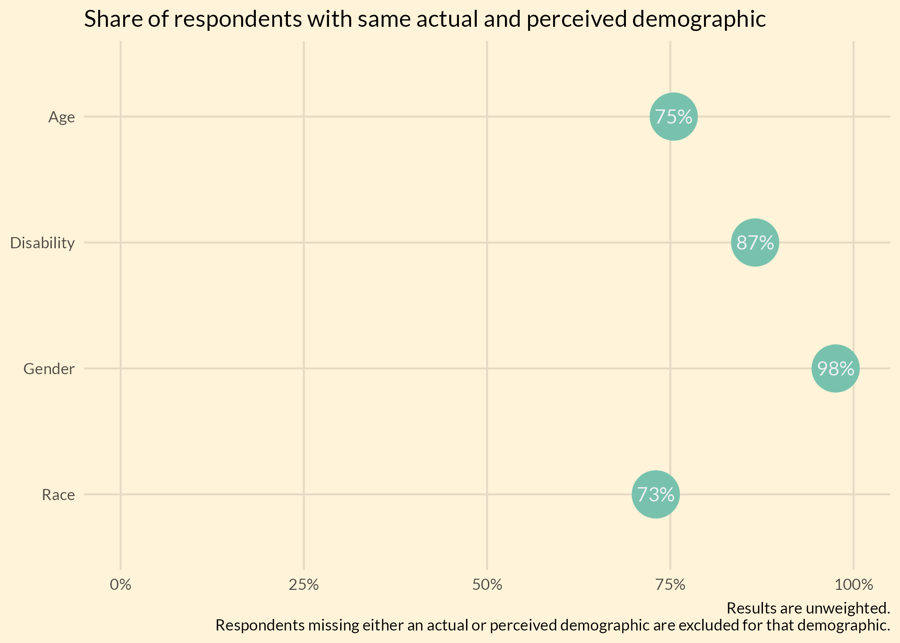
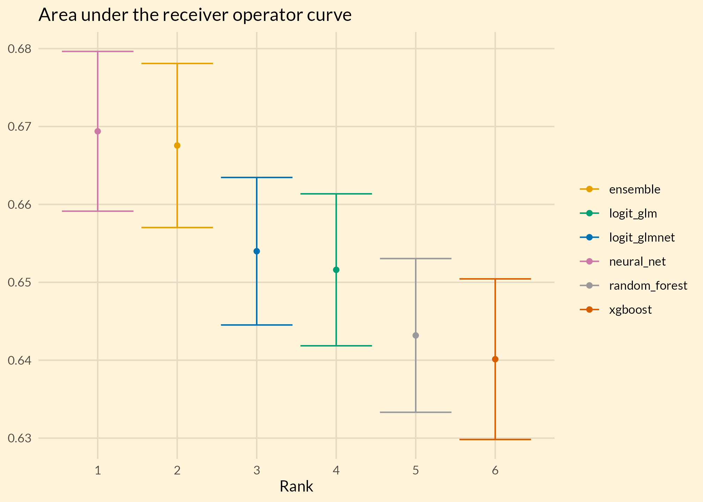
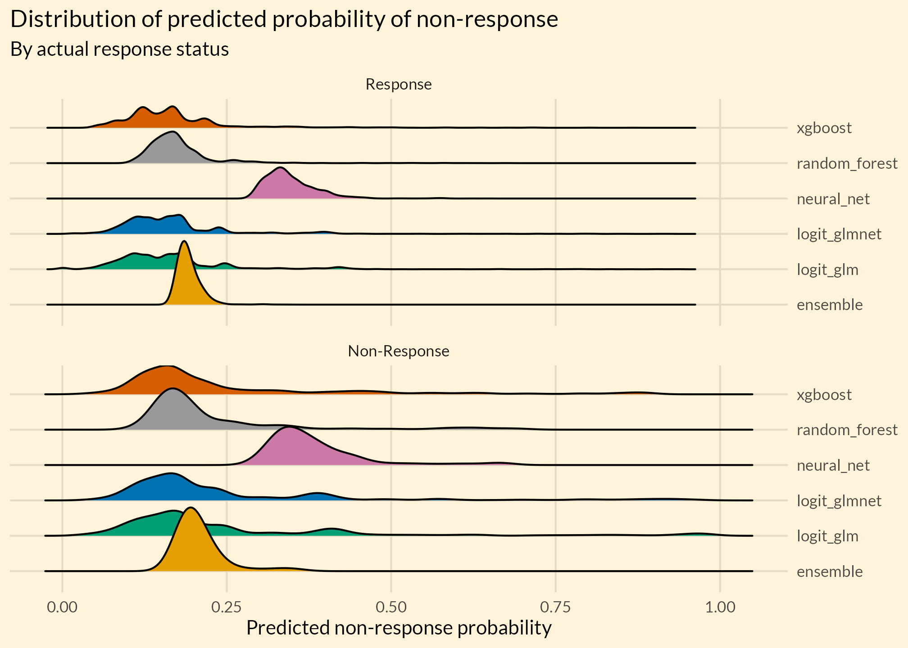
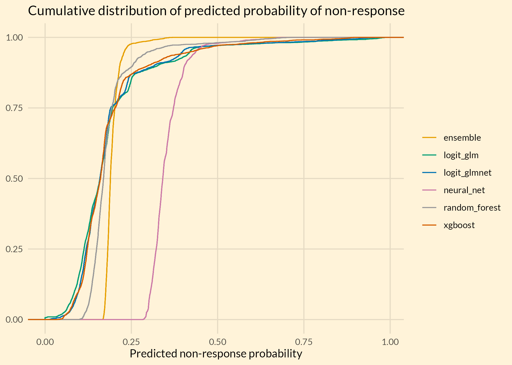
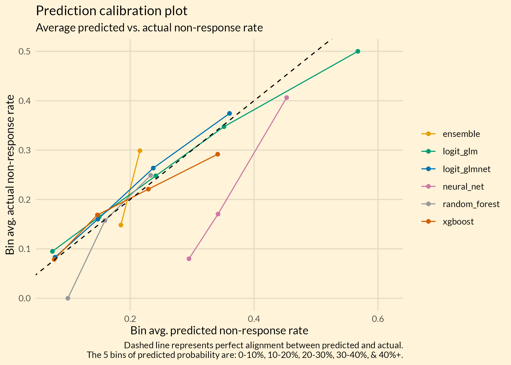
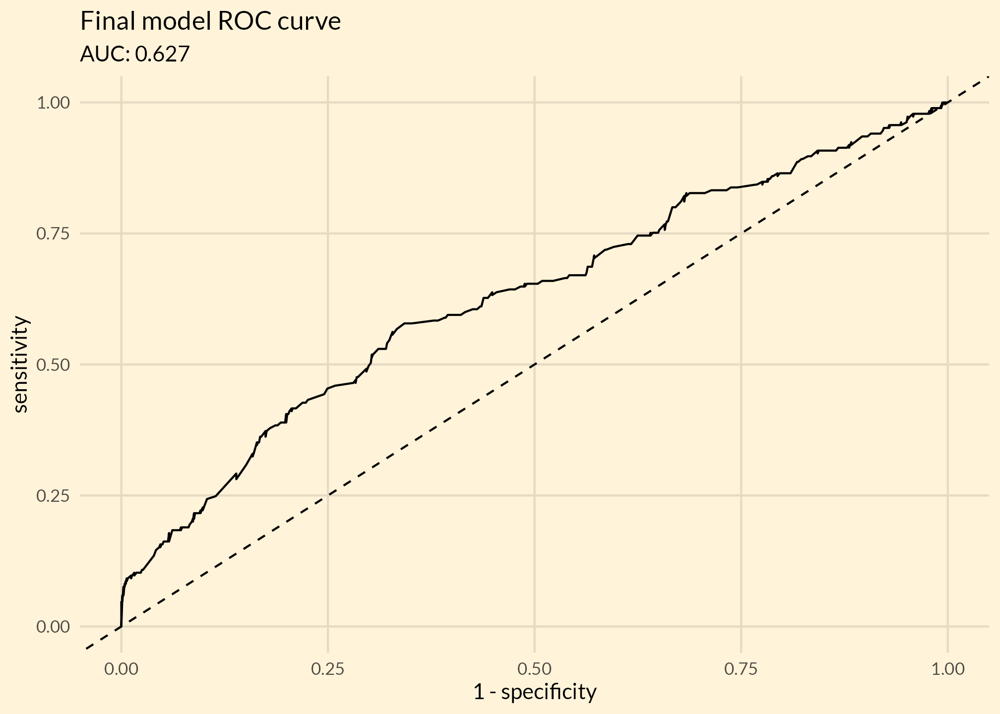
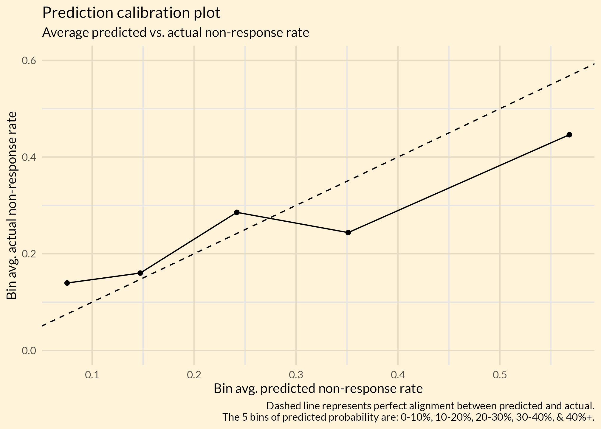

Defining responses and non-responses
To determine the non-response rate, we must first define responses. We only consider those who finished the survey (survey_count == 1) as responses. Those who declined to talk to the interviewer, whose eligibility we could not determine (for language or other reasons), who did not consent to the full interview, or did not finish the survey are considered non-responses. We exclude those determined to be ineligible from the non-responses since they are, by definition, not in the survey frame.
Below is a chart that shows the participants’ progression through the interview process:
Code
survey_path = ifelse(
Sys.info()["sysname"] == "Linux",
# wynton
"/wynton/protected/home/kushel/eveperry/statewide-survey/processed-survey-data/statewide_survey_processed.rds",
# everywhere else
"Y:/Research/BHHI/statewide_survey_processed_data/latest/statewide_survey_processed.rds"
)
raw_surveys = read_rds(survey_path)
prepare_survey_data = function(data) {
data %>%
filter(is.na(rds) | rds == 0) %>%
mutate(
county = fct_relevel(
as_factor(county),
c(
"Sonoma",
"Placer",
"Santa Clara",
"Fresno/Madera",
"Butte",
"Los Angeles",
"San Diego",
"Sacramento"
)
),
language_issues = eligible_yn == -4,
declined = eligible_yn == -3,
could_not_determine_eligibility = eligible_yn == -2,
eligibility_determined = eligible_yn >= -1,
ineligible = eligible_yn %in% -1:0,
eligible = eligible_yn %in% 1:3,
consented_at_start = eligible_yn %in% 1:2,
did_not_consent = eligible_yn == 3,
did_not_finish = consented_at_start & survey_count == 0,
response = survey_count == 1,
non_response = !(ineligible | survey_count == 1),
## perceived demographics
# age
perceived_age = fct_explicit_na(as_factor(perceived_age), "Missing"),
# disability
perceived_disability = fct_explicit_na(
as_factor(perceived_disability), "Missing"
),
perceived_disability = fct_recode(
perceived_disability,
"Disabled" = "Yes",
"Not Disabled" = "No"
),
# intoxication
perceived_intoxication = fct_explicit_na(
as_factor(perceived_intox), "Missing"
),
perceived_intoxication = fct_recode(
perceived_intoxication,
"Intoxicated" = "Yes",
"Not Intoxicated" = "No"
),
# gender
perceived_gender = fct_explicit_na(
as_factor(perceived_gender), "Missing"
),
perceived_gender = fct_recode(
perceived_gender,
"Transgender" = "Transgender, Genderqueer, Gender non-binary or Unclear"
),
# race
perceived_race = fct_explicit_na(
as_factor(perceived_race_onecat), "Missing"
),
perceived_race = fct_recode(
perceived_race,
"Asian/Pacific Islander" = "Asian",
"Asian/Pacific Islander" = "Pacific Islander, Samoan, Hawaiian",
"Black" = "Black, African-American, African",
"White" = "White, Caucasian, European American",
"Latinx" = "Latinx, Hispanic, Latin American",
"Native American" = "Native American, Alaska Native",
"Multiracial" = "Mixed/Multiracial",
"Other" = "Different race or ethnic ID, or unclear",
"Missing" = "FIX CODING ERROR"
),
across(
c(perceived_age, perceived_disability, perceived_gender, perceived_intoxication, perceived_race), fct_relevel, sort),
across(
c(perceived_age, perceived_disability, perceived_gender, perceived_intoxication, perceived_race), fct_relevel, "Missing", after = Inf)
)
}
surveys = prepare_survey_data(raw_surveys)
Non-response rate
Initial calculation
The initial calculation of the non-response rate simply divides the non-responses by the sum of response and non-responses:
\[ Non\ Response\ Rate = \frac{Non\ Response}{Response + Non\ Response} \] And shown by county below:
Code
initial_non_response = surveys %>%
group_by(county) %>%
summarise(
approached = n(),
across(c(response, non_response), weighted_sum, initial_weight)
) %>%
adorn_totals() %>%
mutate(
initial_non_response = non_response / (response + non_response)
)| County | Approached | Non-Response | Response | Initial Non-Response Rate |
|---|---|---|---|---|
| Sonoma | 344 | 302 | 550 | 0.354 |
| Placer | 224 | 69 | 328 | 0.175 |
| Santa Clara | 718 | 376 | 1143 | 0.247 |
| Fresno/Madera | 276 | 118 | 656 | 0.153 |
| Butte | 260 | 104 | 484 | 0.177 |
| Los Angeles | 901 | 439 | 2213 | 0.166 |
| San Diego | 574 | 279 | 1580 | 0.150 |
| Sacramento | 593 | 162 | 1139 | 0.125 |
| Total | 3890 | 1849 | 8092 | 0.186 |
| Weighted with inverse venue & individual selection probabilities. |
Adjusting the non-responses for eligibility
In the eligibility screening, we’ve found that a small number of respondents were ineligible. We want to adjust our non-response count for respondents who declined to participate in the eligibility screen and respondents for whom we could not determine eligibility.
Assuming that respondents for whom we could determine eligibility are not different than those for whom we could not determine eligibility (see figures below), some of the respondents without eligibility determination would have been determined to be ineligible. We also want to exclude these people from our non-response rate calculation.
To get the number of respondents without eligibility determination who would have been determined to be ineligible, we multiply the share of ineligible respondents among respondents with eligibility determinations by the number of of respondents without eligibility. We then subtract that from the non-response count to get the adjusted non-response count:
\[ Adjusted\ Non\ Response = Non\ Response - Eligiblity\ Not\ Determined * \frac{Ineligible}{Eligibility\ Determined} \]
Ultimately, the adjustment does not have a large effect as the adjustment is small in every county:
Code
adjusted_non_response = surveys %>%
group_by(county) %>%
summarise(
approached = sum(initial_weight, na.rm = TRUE),
across(c(non_response, eligibility_determined, ineligible), weighted_sum, initial_weight)
) %>%
mutate(eligibility_not_determined = approached - eligibility_determined) %>%
adorn_totals() %>%
mutate(
adjusted_non_response =
non_response - eligibility_not_determined * ineligible / eligibility_determined
)| County | Eligibility Not Determined | Ineligible | Eligibility Determined | Non-Response | Adjusted Non-Response |
|---|---|---|---|---|---|
| Sonoma | 288 | 37 | 601 | 302 | 283.8 |
| Placer | 66 | 9 | 340 | 69 | 67.8 |
| Santa Clara | 352 | 79 | 1245 | 376 | 353.4 |
| Fresno/Madera | 104 | 9 | 679 | 118 | 116.8 |
| Butte | 92 | 13 | 509 | 104 | 101.5 |
| Los Angeles | 396 | 46 | 2302 | 439 | 431.2 |
| San Diego | 247 | 28 | 1641 | 279 | 275.1 |
| Sacramento | 127 | 14 | 1189 | 162 | 160.6 |
| Total | 1672 | 235 | 8504 | 1849 | 1803.1 |
| Weighted with inverse venue & individual selection probabilities. |
Perceived demographics by eligibility determination status
Respondents’ perceived demographics are similar for those with and without eligibility determinations. This provides assurance that the ineligibility rate among those with determinations can be used to impute the number of likely ineligibility for those without determinations.

Adjusted non-response rate
The adjusted non-response rate is then the adjusted non-response count divided by the sum of the adjusted non-response count and the responses:
\[ Adjusted\ Non\ Response\ Rate = \frac{Adjusted\ Non\ Response}{Response + Adjusted\ Non\ Response} \]
The adjusted non-response rate is slightly lower than the unadjusted rate:
Code
non_response_rate = surveys %>%
group_by(county) %>%
summarise(
approached = sum(initial_weight, na.rm = TRUE),
across(
c(response, non_response, ineligible, eligibility_determined),
weighted_sum, initial_weight
)
) %>%
mutate(eligibility_not_determined = approached - eligibility_determined) %>%
adorn_totals() %>%
mutate(
adjusted_non_response =
non_response - eligibility_not_determined * ineligible / eligibility_determined,
unadjusted_non_response_rate =
non_response / (response + non_response),
adjusted_non_response_rate =
adjusted_non_response / (response + adjusted_non_response)
) | County | Response | Non-Response | Rate | Non-Response | Rate |
|---|---|---|---|---|---|
| Sonoma | 550 | 283.8 | 0.340 | 302 | 0.354 |
| Placer | 328 | 67.8 | 0.171 | 69 | 0.175 |
| Santa Clara | 1143 | 353.4 | 0.236 | 376 | 0.247 |
| Fresno/Madera | 656 | 116.8 | 0.151 | 118 | 0.153 |
| Butte | 484 | 101.5 | 0.173 | 104 | 0.177 |
| Los Angeles | 2213 | 431.2 | 0.163 | 439 | 0.166 |
| San Diego | 1580 | 275.1 | 0.148 | 279 | 0.150 |
| Sacramento | 1139 | 160.6 | 0.123 | 162 | 0.125 |
| Total | 8092 | 1803.1 | 0.182 | 1849 | 0.186 |
| Weighted with inverse venue & individual selection probabilities. |
The non-response rate substantially declines with the order in which we visited the counties.

Non-response by perceived demographics
Perceived demographic missingness
Code
demo_missingness = surveys %>%
group_by(county) %>%
summarise(
approached = n(),
one_plus_missing = sum(
perceived_age == "Missing" |
perceived_disability == "Missing" |
perceived_intoxication == "Missing" |
perceived_gender == "Missing" |
perceived_race == "Missing"
),
across(
c(
perceived_age, perceived_disability,
perceived_intoxication, perceived_gender, perceived_race
),
~ sum(.x == "Missing")
)
) %>%
adorn_totals() %>%
mutate(
across(
c(
one_plus_missing, perceived_age, perceived_disability,
perceived_intoxication, perceived_gender, perceived_race
),
~ .x / approached
)
)Overall, the missingness in perceived demographics is low, at around 4%. Most counties show similarly low levels of missingness, with Placer as a notable exception (although still relatively low, at around 10%).
| County | 1+ Missing | Age | Disability | Intoxication | Gender | Race |
|---|---|---|---|---|---|---|
| Sonoma | 0.047 | 0.023 | 0.044 | 0.044 | 0.020 | 0.038 |
| Placer | 0.103 | 0.067 | 0.085 | 0.085 | 0.036 | 0.076 |
| Santa Clara | 0.047 | 0.033 | 0.032 | 0.033 | 0.021 | 0.029 |
| Fresno/Madera | 0.014 | 0.007 | 0.011 | 0.011 | 0.004 | 0.011 |
| Butte | 0.027 | 0.008 | 0.008 | 0.015 | 0.004 | 0.019 |
| Los Angeles | 0.038 | 0.019 | 0.024 | 0.024 | 0.016 | 0.024 |
| San Diego | 0.037 | 0.026 | 0.024 | 0.024 | 0.021 | 0.019 |
| Sacramento | 0.022 | 0.012 | 0.013 | 0.015 | 0.012 | 0.012 |
| Total | 0.039 | 0.023 | 0.027 | 0.028 | 0.017 | 0.025 |
| Table is unweighted. |
Perceived age
| Age | N | Eligibility Determined | Ineligible | Non-Response |
|---|---|---|---|---|
| 18-24 years old | 227 | 0.879 | 0.049 | 0.139 |
| 25-54 years old | 2432 | 0.850 | 0.014 | 0.173 |
| 55+ years old | 1141 | 0.820 | 0.037 | 0.199 |
| Missing | 90 | 0.506 | 0.384 | 0.613 |
| Total | 3890 | 0.836 | 0.028 | 0.186 |
| Weighted with inverse venue & individual selection probabilities. |
Perceived disability
| Disability | N | Eligibility Determined | Ineligible | Non-Response |
|---|---|---|---|---|
| Disabled | 223 | 0.879 | 0.016 | 0.161 |
| Not Disabled | 3561 | 0.844 | 0.024 | 0.175 |
| Missing | 106 | 0.408 | 0.397 | 0.732 |
| Total | 3890 | 0.836 | 0.028 | 0.186 |
| Weighted with inverse venue & individual selection probabilities. |
Perceived gender
| Gender | N | Eligibility Determined | Ineligible | Non-Response |
|---|---|---|---|---|
| Female | 1331 | 0.883 | 0.021 | 0.144 |
| Male | 2467 | 0.816 | 0.024 | 0.203 |
| Transgender | 27 | 0.937 | 0.011 | 0.064 |
| Missing | 65 | 0.690 | 0.358 | 0.412 |
| Total | 3890 | 0.836 | 0.028 | 0.186 |
| Weighted with inverse venue & individual selection probabilities. |
Perceived intoxication
| Intoxication | N | Eligibility Determined | Ineligible | Non-Response |
|---|---|---|---|---|
| Intoxicated | 28 | 0.340 | 0.000 | 0.695 |
| Not Intoxicated | 3752 | 0.851 | 0.023 | 0.170 |
| Missing | 110 | 0.432 | 0.343 | 0.667 |
| Total | 3890 | 0.836 | 0.028 | 0.186 |
| Weighted with inverse venue & individual selection probabilities. |
Perceived race
| Race | N | Eligibility Determined | Ineligible | Non-Response |
|---|---|---|---|---|
| Asian/Pacific Islander | 88 | 0.689 | 0.021 | 0.326 |
| Black | 824 | 0.884 | 0.028 | 0.146 |
| Latinx | 954 | 0.841 | 0.024 | 0.184 |
| Multiracial | 184 | 0.806 | 0.019 | 0.204 |
| Native American | 13 | 1.000 | 0.000 | 0.000 |
| Other | 23 | 0.545 | 0.037 | 0.465 |
| White | 1705 | 0.841 | 0.020 | 0.175 |
| Missing | 99 | 0.457 | 0.356 | 0.653 |
| Total | 3890 | 0.836 | 0.028 | 0.186 |
| Weighted with inverse venue & individual selection probabilities. |
Site category
| Site category | N | Eligibility Determined | Ineligible | Non-Response |
|---|---|---|---|---|
| 16 | 0.867 | 0.000 | 0.133 | |
| Emergency Shelter | 1358 | 0.865 | 0.024 | 0.151 |
| Encampment | 2033 | 0.824 | 0.026 | 0.205 |
| Hotspot | 15 | 0.794 | 0.000 | 0.206 |
| Non Shelter Venue | 468 | 0.803 | 0.039 | 0.214 |
| Total | 3890 | 0.836 | 0.028 | 0.186 |
| Weighted with inverse venue & individual selection probabilities. |
Perceived demographics reliability

Modeling non-response
Adjusted non-response weights
We adjust the weights of the respondents without an eligibility determination such that the weighted average non-resonse rate equals the adjusted non-response weight above. The weight adjustment is the unweighted rate of eligibility for the survey:
\[ Adjusted\ nonreponse\ weights_{eligibility\ not\ determined} = initial\_weight * \frac{\sum{eligible}}{\sum{eligibility\ determined}}\]
Then, we use these weights to predict non-response. The predictors in the model are county and the perceived demographics (age, disability, gender, intoxication, and race).
Code
prepare_model_data = function(data) {
data %>%
mutate(
anrr_weight = if_else(
eligibility_determined,
initial_weight,
initial_weight * (sum(eligible) / sum(eligibility_determined))
),
anrr_weight = importance_weights(anrr_weight)
) %>%
filter(!ineligible) %>%
select(
anrr_weight, non_response, perceived_age, perceived_disability,
perceived_gender, perceived_intoxication, perceived_race, county,
site_category, record_id
) %>%
mutate(
across(where(is.factor), fct_drop),
across(starts_with("perceived"), fct_recode, NULL = "Missing"),
site_category = fct_recode(
site_category,
"Encampment" = "Hotspot",
NULL = ""
),
non_response = factor(
non_response,
levels = c(FALSE, TRUE),
labels = c("Response", "Non-Response")
)
) %>%
filter(!is.na(anrr_weight))
}
anrr_weights = prepare_model_data(surveys) Candidate models
To predict non-response, we evaluate a set of individual models and an ensemble model that combines the individual models.
The only pre-processing step is to turn categorical variables into sets of dummy variables.
Code
reference_levels = c(
perceived_age = "18-24 years old",
perceived_disability = "Not Disabled",
perceived_gender = "Male",
perceived_intoxication = "Not Intoxicated",
perceived_race = "White",
county = "Los Angeles",
site_category = "Emergency Shelter"
)
anrr_recipe = anrr_weights %>%
recipe(non_response ~ .) %>%
update_role(record_id, new_role = "id variable") %>%
step_unknown(all_factor_predictors(), new_level = "Missing") %>%
step_relevel(
perceived_age,
ref_level = reference_levels["perceived_age"]
) %>%
step_relevel(
perceived_disability,
ref_level = reference_levels["perceived_disability"]
) %>%
step_relevel(
perceived_gender,
ref_level = reference_levels["perceived_gender"]
) %>%
step_relevel(
perceived_intoxication,
ref_level = reference_levels["perceived_intoxication"]
) %>%
step_relevel(
perceived_race,
ref_level = reference_levels["perceived_race"]
) %>%
step_relevel(
county,
ref_level = reference_levels["county"]
) %>%
step_relevel(
site_category,
ref_level = reference_levels["site_category"]
) %>%
step_dummy(all_predictors())To allow for proper evaluation of our predictions, we first split the data into training (75% of the data) and test (25% of the data) sets.
Code
anrr_split = initial_split(anrr_weights, strata = non_response)To select the parameters for the models, we evaluate a random grid with 25 combinations of parameters with 10-fold cross validation repeated 5 times.
Code
anrr_folds = vfold_cv(
training(anrr_split), v = tuning_v_folds, repeats = tuning_repeats
)Individual models
The 5 individual models are: logistic regression (base R), logistic regression with lasso (glmnet package), random forest (ranger package), neural net (nnet packages), and gradient boosted trees (xgboost package). We also evaluate a stacked ensemble of 5 models.
Code
logit_glm_model = logistic_reg() %>%
set_mode("classification") %>%
set_engine("glm")
logit_glmnet_model = logistic_reg(penalty = tune(), mixture = tune()) %>%
set_mode("classification") %>%
set_engine("glmnet")
rf_model = rand_forest(mtry = tune(), min_n = tune(), trees = 1000) %>%
set_mode("classification") %>%
set_engine("ranger")
nn_model = mlp(hidden_units = tune(), penalty = tune(), epochs = tune()) %>%
set_mode("classification") %>%
set_engine("nnet")
xgboost_model = boost_tree(
trees = tune(), min_n = tune(), tree_depth = tune(), learn_rate = tune(),
loss_reduction = tune(), sample_size = tune()
) %>%
set_mode("classification") %>%
set_engine("xgboost")Code
weight_models = workflow_set(
preproc = list(basic = anrr_recipe),
models = list(
logit_glm = logit_glm_model,
logit_glmnet = logit_glmnet_model,
random_forest = rf_model,
xgboost = xgboost_model
),
case_weights = anrr_weight
)
no_weight_models = workflow_set(
preproc = list(basic = anrr_recipe),
models = list(
neural_net = nn_model
)
)
tune_metrics = metric_set(
roc_auc, accuracy, mn_log_loss, pr_auc, average_precision, f_meas
)
race_ctrl = control_race(
save_pred = TRUE,
allow_par = TRUE,
parallel_over = "everything",
save_workflow = TRUE,
verbose_elim = TRUE
)
weight_results = weight_models %>%
workflow_map(
seed = 510,
fn = "tune_race_anova",
resamples = anrr_folds,
grid = tuning_grid_size,
control = race_ctrl,
verbose = TRUE,
metrics = tune_metrics
)
no_weight_results = no_weight_models %>%
workflow_map(
seed = 510,
fn = "tune_race_anova",
resamples = anrr_folds,
grid = tuning_grid_size,
control = race_ctrl,
verbose = TRUE,
metrics = tune_metrics
)
grid_results = bind_rows(weight_results, no_weight_results)Ensemble model
We create the ensemble model by stacking the predicted probabilities from the individual models and then using those predicted probabilities to model non-response.
Code
ensemble_stack = stacks() %>%
add_candidates(candidates = grid_results) %>%
stacks:::process_data_stack()To evaluate the ensemble we reassemble the cross-validation folds, using the model predictions instead of the observed data.
Code
ensemble_folds = anrr_folds %>%
tidy() %>%
chop(Row) %>%
pivot_wider(names_from = Data, values_from = Row) %>%
select(Analysis, Assessment) %>%
pmap(
function(Analysis, Assessment)
list(analysis = Analysis, assessment = Assessment)
) %>%
map(make_splits, ensemble_stack) %>%
manual_rset(
map2_chr(anrr_folds$id, anrr_folds$id2, paste, sep = "_")
) Then we fit LASSO logistic regressions with a set of candidate penalty terms
Code
ensemble_penalty_candidates = 10^seq(-2, -0.5, length = 20)
ensemble_wflow = workflow() %>%
add_model(
logistic_reg(penalty = tune(), mixture = tune()) %>%
set_engine("glmnet") %>%
set_mode("classification")
) %>%
add_recipe(
recipe(
non_response ~ .,
data = ensemble_stack
)
)
ensemble_results = tune_grid(
ensemble_wflow,
resamples = ensemble_folds,
grid = expand_grid(
penalty = ensemble_penalty_candidates,
mixture = 1
),
metrics = tune_metrics,
control = control_grid(
save_pred = TRUE,
allow_par = TRUE,
parallel_over = "everything",
save_workflow = TRUE
)
)
ensemble_set = as_workflow_set(ensemble = ensemble_results)Selecting a model
We selected the logistic regression because it is the simplest model and there are no other models with statistically significant performance increases.
Area under the receiver operator curve
While the ensemble and neural net have slightly higher AUC, the advantage over the logistic regression is not statistically significant.
Code
selection_metric = "roc_auc"
best_ensemble_metrics = rank_results(
ensemble_set, rank_metric = selection_metric, select_best = TRUE
) %>%
filter(.metric == selection_metric) %>%
mutate(model_label = "ensemble")
best_metrics = rank_results(
grid_results, rank_metric = selection_metric, select_best = TRUE
) %>%
filter(.metric == selection_metric) %>%
mutate(model_label = str_remove(wflow_id, "basic_"))
best_metrics %>%
bind_rows(best_ensemble_metrics) %>%
mutate(rank = min_rank(-1 * mean)) %>%
arrange(rank) %>%
ggplot(aes(x = rank, y = mean, color = model_label)) +
geom_errorbar(
aes(
ymin = mean - 1.96 * std_err,
ymax = mean + 1.96 * std_err
)
) +
geom_point() +
scale_x_continuous(breaks = scales::breaks_width(1)) +
labs(
title = "Area under the receiver operator curve",
x = "Rank",
y = NULL,
color = NULL
)
Predicted probability distribution
The logistic model has a similar probability distribution to the other models and shows no reason to be concerned about its performance.


Calibration plot
In the calibration plot, we split the predicted probabilities into 5 bins: 0-10%, 10-20%, 20-30%, 30-40%, & 40%+. Then we take the average predicted probability of non-response in each bin and plot it against the actual non-response rate in each bin. The closer the model is to the 45 degree dashed line the better it performs.
The logistic regression closely matches the 45 degree line for the first 4 bins. Like the other models, its predictions for observations with the greatest probability of non-response are somewhat overstated.

Fitting the full model
Model summary
| Odds Ratio | Std. Error | Z-Statistic | p-value | |
|---|---|---|---|---|
| Perceived Age (Ref. level: 18-24 years old) | ||||
| 25-54 years old | 1.68 | 0.16 | 3.26 | 0.001 |
| 55+ years old | 1.72 | 0.16 | 3.31 | <0.001 |
| Missing | 3.87 | 0.47 | 2.90 | 0.004 |
| Perceived Disability (Ref. level: Not Disabled) | ||||
| Disabled | 0.53 | 0.17 | −3.77 | <0.001 |
| Missing | 20.29 | 0.52 | 5.75 | <0.001 |
| Perceived Gender (Ref. level: Male) | ||||
| Female | 0.66 | 0.08 | −5.39 | <0.001 |
| Transgender | 0.43 | 0.53 | −1.60 | 0.11 |
| Missing | 0.03 | 0.60 | −5.78 | <0.001 |
| Perceived Intoxication (Ref. level: Not Intoxicated) | ||||
| Intoxicated | 27.93 | 0.33 | 10.02 | <0.001 |
| Missing | 0.90 | 0.51 | −0.20 | 0.8 |
| Perceived Race (Ref. level: White) | ||||
| Asian/Pacific Islander | 2.39 | 0.18 | 4.83 | <0.001 |
| Black | 0.88 | 0.09 | −1.43 | 0.2 |
| Latinx | 1.01 | 0.09 | 0.10 | >0.9 |
| Multiracial | 0.91 | 0.16 | −0.56 | 0.6 |
| Native American | 0.00 | 208.45 | −0.06 | >0.9 |
| Other | 3.89 | 0.28 | 4.92 | <0.001 |
| Missing | 4.20 | 0.33 | 4.30 | <0.001 |
| County (Ref. level: Los Angeles) | ||||
| Sonoma | 3.17 | 0.11 | 10.35 | <0.001 |
| Placer | 0.56 | 0.21 | −2.71 | 0.007 |
| Santa Clara | 1.44 | 0.10 | 3.60 | <0.001 |
| Fresno/Madera | 0.66 | 0.15 | −2.70 | 0.007 |
| Butte | 1.00 | 0.15 | 0.00 | >0.9 |
| San Diego | 0.98 | 0.11 | −0.17 | 0.9 |
| Sacramento | 0.82 | 0.12 | −1.63 | 0.10 |
| Missing | NA | NA | NA | NA |
| Site Category (Ref. level: Emergency Shelter) | ||||
| Encampment | 1.21 | 0.08 | 2.53 | 0.012 |
| Non Shelter Venue | 1.17 | 0.10 | 1.66 | 0.10 |
| Missing | 0.00 | 262.28 | −0.05 | >0.9 |
Final ROC curve

Final calibration plot
